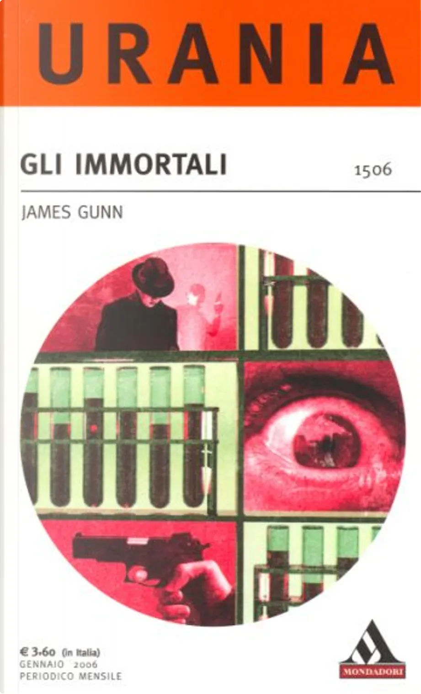

Avvistamento kosher
Questo è un racconto lampo (circa 1000 caratteri, spazi inclusi) che scrissi per partecipare ad un concorso, venne pubblicato all'interno del numero 1506 di Urania – Mondadori (GLI IMMORTALI – James Gunn), con il titolo di: “Avvistamento kosher”.
– Ben arrivato Mandriano Capo.
– Tutto in ordine, qui?
– Certo: i capi sono in loco, ultimati i controlli pre-macellazione, continua il trend di crescita. Se posso dirlo, le sue sono state grandi innovazioni! Riprocessare le scorie integrandole al foraggio implica un notevole risparmio di risorse.
– Ti ringrazio, stalliere. Foraggiare il bestiame coi suoi escrementi non è un idea nuova, i sistemi-condizionamento permettono di far acquisire ai capi qualsiasi nuova abitudine, e i controlli post-macellazione consentono comunque di mantenere gli standard di qualità.
– Si, Capo.
– Che hai, lì?
– Oh, nulla, sono solo vecchie banche dati.
– Cronache del Bestiame? Bah.
– Le consulto nei tempi morti.
– Non me ne sono mai interessato. Che dice, lì?
– Il bestiame parla di noi.
– Prego?
– Gli adulti di una comunità preesistente il nostro arrivo sul pianeta. Qui credo riferiscano di una delle nostre prime navi-sonda.
– Comunità?
– Questa pare la chiamassero “Paris”.
– E li che c’è scritto?
– “Il famoso avvistamento del 2006.”